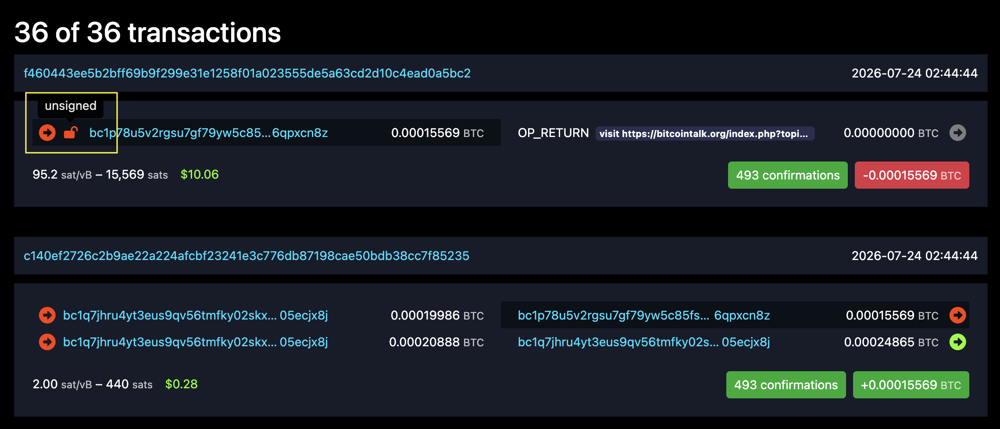

I saw a thread on bitcointalk: How to handle weak scripts?
It described a Taproot script vulnerability that allowed anyone to spend the UTXO without a valid signature. On mempool.space, transaction f460...5bc2 clearly marks the input as unsigned, something rarely seen on Bitcoin:

The script described in the thread, and actually executed by that transaction, was:
OP_PUSHBYTES_32 fa9b5ec193f735c41b804fc6ace1d28e81a299fc815c0f5009dd2dd7d0293c3b
OP_CHECKSIG
OP_IF
OP_PUSHBYTES_32 ff1275b635cd160914cfe1bc516f521abde0fc8ae3fd92ae01ca16449e4758e9
OP_ENDIF
It can be simplified to:
<pubkey A>
OP_CHECKSIG
OP_IF
<pubkey B>
OP_ENDIF
Taproot uses a stack-based script and takes some mental effort to understand. Translated roughly into JavaScript, it means:
function isTrue(...params)
{
var pubkeyA = params[-1];
params--;
if (checkSign(pubkeyA))
{
return true;
}
else
{
//
}
return params[-1];
}
Under normal usage, if the input is [pubkeyA], checkSign(pubkeyA) is true and the function returns true, which is reasonable.
If the input is [pubkeyC], checkSign(pubkeyA) is false, the empty else branch does nothing, and the function returns null rather than true. This also seems reasonable.
The vulnerability is that params is an array, and a user does not have to provide only one parameter.
An attacker can provide the unexpected combination [true, pubkeyC]. After the empty else branch, return params[0] returns true.
There are several basic problems here:
This so-called script vulnerability is simply the result of the author writing careless code. The “author” here is not Bitcoin’s creator, but merely a Bitcoin user. Taproot is comparable to an Ethereum smart contract: anyone can write script rules determining how money is controlled and spent. Bitcoin Script is complex and not Turing-complete, so many people overlook that Bitcoin supports custom scripts.
This is clearly not a Bitcoin protocol vulnerability. Bitcoin consensus only executes the script rules correctly; whether the script logic itself is vulnerable is unrelated to the protocol.
In practice, any Bitcoin wallet or ecosystem project relying on Taproot script logic would have its code reviewed by an auditing company. Such a basic error should be extremely rare on mainnet.
Taproot scripts also provide strong privacy. We can know that an address beginning with bc1p is Taproot and that 0xc0 is the current leaf version, but before a UTXO is spent the network cannot see the script’s contents. At the moment it is spent, all the money will probably be transferred away. When a P2TR UTXO is created, the chain stores only the root hash of the tree. Any path that unlocks the root is a valid input, and only during spending does the chain verify the particular leaf and key path. Even if one leaf is revealed, the chain can see only that leaf, not the other leaves beneath the same root.
From the beginning, Bitcoin encouraged using a new address for every transfer, and most reliable wallets do so. This greatly reduces the chance that a vulnerable script can be exploited again.
From both technical and commercial perspectives, vulnerable scripts are exceptionally rare individual cases caused entirely by their authors. The chance of a vulnerable script holding funds on mainnet is very small.
Could such a vulnerable script really exist on the network, allowing funds to be transferred without a signature?
Starting from bc1p...cn8z, several questions arise.
Wallet apps obviously do not provide this function. Bitcoin transactions are also complicated: the originating transaction and output index of each UTXO must be supplied as parameters. This example script, taproot-script-path-demo.mjs, can be run as follows:
TXID='0618d93bc4eef77f4b47c4b4b188011f95c7ccb929e6226df2774b88b5d4693d'
VOUT='0'
INPUT_SATS='15000'
DESTINATION='bc1px6jn77jd4tplp94q46svkuutc53wtn24dk34wxp4dfur6tvez89swvlcmj'
FEE_SATS='1000'
node outputs/taproot-script-path-demo.mjs \
"$TXID" \
"$VOUT" \
"$INPUT_SATS" \
"$DESTINATION" \
"$FEE_SATS"
If you accidentally send money to bc1p...cn8z, this script can move it without the private key. Be careful: xOnlyKey and payload are hard-coded. Another target address requires different values. What are those values? They become known only after the P2TR output has been spent.
Thus, even if we know an on-chain address has funds and a vulnerable script, we cannot touch the money without the entire tree structure and the xOnlyKey and payload values. From this perspective, Bitcoin assets are still highly secure.
Another example script, audit-taproot-neighborhood.mjs, checks this. The result was no. The author moved all funds from every related address; no such elementary vulnerability remained.
This program scans the Bitcoin network for similar script vulnerabilities: tapscript_weak_finder
Its logic is:
0xc0.[01, <empty signature>] for zero, one, and two parameters, producing twelve combinations.01 and <empty signature> to small integers and constants such as 02, 03, true, and false.[[data, sigA, sigB]], try variants including [data, "", sigB] and [data, sigA, ""].OP_SUCCESS80, or use public-key types not yet defined by the specification.Of course I will share the results. Running this open-source program will produce the same result and conclusion. I scanned from block 709632, where Taproot activated on mainnet, through block 959701, the latest height at the time.
The program scanned 71,037 blocks, 127,119,410 transactions, and 1,000,061 Taproot addresses. Of these, 427,378 were scripts in which the program recognized no problem, while 12 were potentially vulnerable weak scripts.
Among those 12, eight were weak scripts requiring no signature, one was a non-vulnerable script that always returned OP_SUCCESS80, and three were non-vulnerable scripts containing opcodes unsupported by the scanner’s interpreter.
Let us examine the potentially weak scripts one by one. The raw, unprocessed output is in result_report.json, from which the addresses, transactions, and scripts below can be reconstructed.
The first Taproot address appeared at block 758737: bc1p...2354
It appeared in two abnormal transactions:
The conclusion first: these were created by highly professional developers to demonstrate Bitcoin mainnet’s BIP342 rules.
The first transaction, 00c1...c40e, contains two witness parameters and was used for testing.
The second, 73be...2a7e, is outrageous: it contains 500,001 witness parameters, while its decoded OP_RETURN text says “you’ll run cln. and you’ll be happy.”
Tapscript normally allows no more than 1,000 elements in the initial stack. The transaction succeeded with 500,001 because BIP342 specifies that if a script contains OP_SUCCESSx, it succeeds regardless of its element count. OP_SUCCESSx consists of opcodes not currently defined but reserved for possible future use, so BIP342 specifies this behavior.
The transaction was clearly demonstrating that situation. Its enormous parameter count cost more than $700 in fees.
The next addresses appeared at block 771740:
These three scripts contained OP_CHECKSEQUENCEVERIFY, which the scanner did not implement and therefore marked as abnormal. The opcode requires waiting a specified number of blocks before funds can be used and is typical of timelock scripts.
At block 775722, the scanner found bc1p...amq6.
This script had a genuine logic vulnerability and allowed funds to move without any signature. It was clearly an Ordinals data wrapper, perhaps created by a developer experimenting with an Ordinals-like protocol. All funds were transferred out at the time, so the address is now empty.
There were several other addresses, not many, mostly Ordinals tests, so I will not analyze each in detail:
bc1p...3hu0, block 777335, an Ordinals PNG image.bc1p...xgdr, block 777617, an addition operation without signature verification.bc1p...gq7d, block 777681, a test script that always returns true.bc1p...9x3t, an Ordinals Hello World script.I scanned every block and transaction from Taproot activation through the present. A small number of scripts resembling the vulnerability described in How to handle weak scripts? really did appear, but none of those addresses still held funds.
This investigation also suggests two questions: